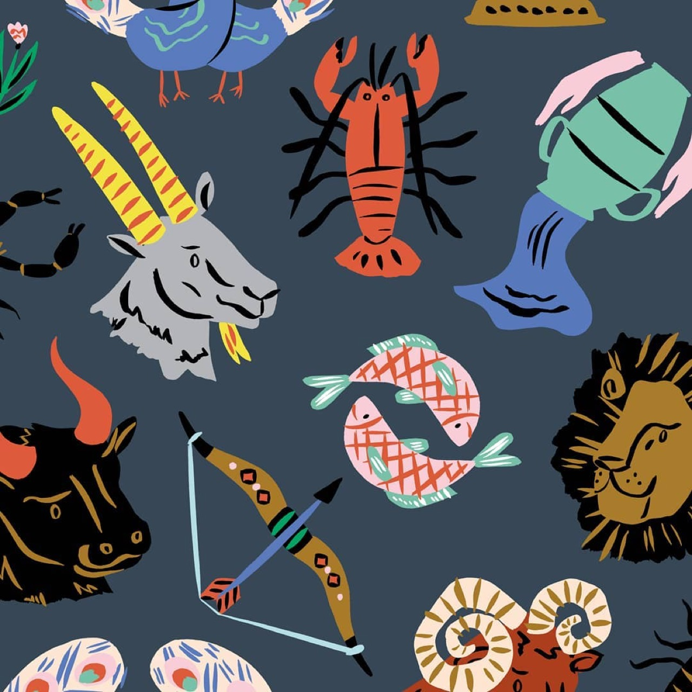

Glass blowing represents ancient technique transformed into contemporary artistic practice, permitting artists to create functional and sculptural objects of extraordinary beauty and technical sophistication. Contemporary glass artists employ traditional glassblowing alongside contemporary technologies and conceptual approaches, creating work engaging with themes of transparency, fragility, light, and transformation. Glass art bridges functional craft and fine art, with accomplished artists creating work simultaneously possessing practical utility and serious artistic merit. The material properties of glass—translucency, light transmission, and capacity for brilliant color—generate aesthetic possibilities unique to the medium, attracting artists committed to exploring glass's artistic potential.
This Illustrator Is Clearly Inspired by Nature

Previous articleFind Peace In Valesca van Waveren’s Illustrations